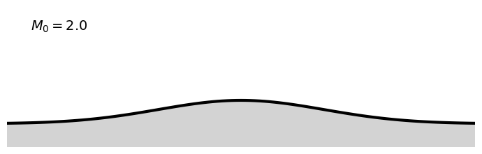
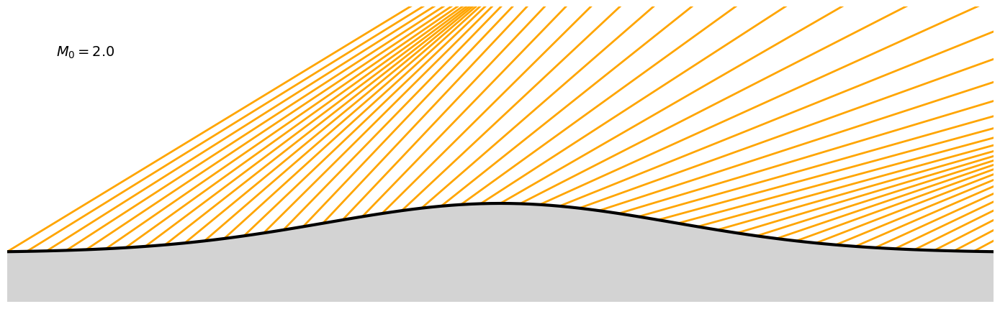

supersonic flow over a bump#
import numpy as np
import matplotlib.pyplot as plt
import scipy.optimize as scopt
from aerokit.common import defaultgas
from aerokit.aero import degree as deg # import trigo functions with degree unit support
#from aerokit.aero import ShockWave as sw # import functions for shockwave computation
from aerokit.aero import Supersonic as sup # import functions for steady supersonic flows
%matplotlib inline
#
#plt.rc('text', usetex=True)
sty_carac = { 'color': 'orange', 'linewidth': 2 }
sty_wall = { 'color': 'black', 'linewidth': 3 }
sty_flow = { 'color': 'green', 'linewidth': 3 }
sty_text = { 'fontsize': 14 }
On définit tout d’abord les paramètres de ce cas. Ils sont définis comme des variables globales, que l’on peut utiliser directement dans les fonctions (comme \(\gamma\) par exemple).
# definition of problem parameters
gam = 1.4 ; defaultgas.set_gamma(gam)
M0 = 2.
xmax = 1.
xmin = -1.
ymin = -.1
ymax = .5 #
# function to plot the geometry
#
def ywall(x):
return .1*np.exp(-(x/.5)**2)
def wall_angle(x):
eps=1e-4
return deg.atan((ywall(x+eps)-ywall(x-eps))/(2.*eps))
def fig(zoom=1):
global ax
fig = plt.figure(figsize=(14*zoom,8*zoom), facecolor='white')
ax = fig.add_subplot(111)
#plt.axis([xneg, length])
ax.set(aspect="equal")
ax.axis('off')
#ax.set_facecolor('white') # depends on backend
ax.set_xlim(xmin, xmax) #, xlim=[xneg, 4*length], ylim=[-.1, ymax])
ax.set_ylim(ymin, ymax) #, xlim=[xneg, 4*length], ylim=[-.1, ymax])
def plot_geom():
x = np.linspace(xmin, xmax, 101)
plt.fill(np.concatenate(([xmax, xmin], x)), np.concatenate(([ymin, ymin], ywall(x))),
facecolor='lightgray', alpha=1., zorder=100)
plt.plot(x, ywall(x), zorder=101, **sty_wall)
plt.text(xmin+.1, ymax-.1, r'$M_0={}$'.format(M0), zorder=101, backgroundcolor='white', **sty_text)
plt.tight_layout()
#
# test de la fonction de tracé
fig(zoom=.5); plot_geom()

Faisceau de détente#
om0 = sup.PrandtlMeyer_Mach(M0)
mu0 = deg.asin(1./M0)
def mach_wall(x):
return sup.Mach_PrandtlMeyer(om0-wall_angle(x))
def mach(x,y):
m = M0
mw = 0.
while abs(m-mw) > 1.e-6:
th = om0 - sup.PrandtlMeyer_Mach(m) #C- : om0 + th0 = om1 + th1
thpmu = th + deg.asin(1./m)
slope = deg.tan(thpmu)
# solve intersection with wall: y + slope*(x'-x)=ywall(x')
xwall = scopt.fsolve(lambda xw: y-ywall(xw)+slope*(xw-x), x-y/slope)
mw = mach_wall(xwall)
m = .5*(m+mw)
return m
def plot_CP_wall(x):
for xw in x:
slope = deg.tan(wall_angle(xw)+deg.asin(1./mach_wall(xw)))
#print(xw, slope)
plt.plot([xw, xmax], [ywall(xw), ywall(xw)+slope*(xmax-xw)], **sty_carac)
def plot_CP(n=51):
plot_CP_wall(np.linspace(xmin, xmax, n))
def fill_expansion(): # tracé des caractéristiques de la détente
plt.fill([xmax, 0, xmax], [xmax*deg.tan(wang1+mu1), 0, xmax*deg.tan(wang0+mu0)],
facecolor=sty_carac['color'], alpha=.2)
#
fig()
plot_CP()
plot_geom()

integration trajectoire et C-#
def flow_prop(x, y):
m = mach(x, y)
th = om0 - sup.PrandtlMeyer_Mach(m)
mu = deg.asin(1./m)
prop = {'ang': th, 'C+': th+mu, 'C-': th-mu}
return prop
def integ(x, y, ctype, smin, smax, npts=100):
def step(x0, y0, ds, ang):
return x0+ds*deg.cos(ang), y0+ds*deg.sin(ang)
trajx = np.zeros(npts+1)
trajy = np.zeros(npts+1)
nforw = int(npts * smax/(smax-smin))
nback = npts-nforw
#print(smin, smax, nforw, nback)
sx = x
sy = y
trajx[nback] = sx ; trajy[nback] = sy
# backward
if nback>0:
ds = smin/nback
for i in range(nback):
px, py = step(sx, sy, .5*ds, flow_prop(sx, sy)[ctype]) # RK2 / predictor
sx, sy = step(sx, sy, ds, flow_prop(px, py)[ctype]) # RK2 / final step
trajx[nback-i-1] = sx ; trajy[nback-i-1] = sy
# forward
if nforw>0:
ds = smax/nforw
sx = x
sy = y
for i in range(nforw):
px, py = step(sx, sy, .5*ds, flow_prop(sx, sy)[ctype]) # RK2 / predictor
sx, sy = step(sx, sy, ds, flow_prop(px, py)[ctype]) # RK2 / final step
trajx[nback+i+1] = sx ; trajy[nback+i+1] = sy
return trajx, trajy
fig()
def plot_CM(n=31, length=-1.):
x = np.linspace(xmin, xmax, n)
for xw in x:
xcm, ycm = integ(xw, ywall(xw), 'C-', length, 0.)
plt.plot(xcm, ycm, **sty_carac)
plot_CM()
#
x0 = -.9 ; y0 = .1
CTx, CTy = integ(x0, y0, 'ang', 0., 3.)
plt.plot(CTx, CTy, **sty_flow)
x0 = -.9 ; y0 = .12
CTx, CTy = integ(x0, y0, 'ang', 0., 3.)
plt.plot(CTx, CTy, **sty_flow)
#
plot_geom()
---------------------------------------------------------------------------
KeyboardInterrupt Traceback (most recent call last)
Cell In[5], line 12
10 #
11 x0 = -.9 ; y0 = .1
---> 12 CTx, CTy = integ(x0, y0, 'ang', 0., 3.)
13 plt.plot(CTx, CTy, **sty_flow)
14 x0 = -.9 ; y0 = .12
Cell In[4], line 32, in integ(x, y, ctype, smin, smax, npts)
30 sy = y
31 for i in range(nforw):
---> 32 px, py = step(sx, sy, .5*ds, flow_prop(sx, sy)[ctype]) # RK2 / predictor
33 sx, sy = step(sx, sy, ds, flow_prop(px, py)[ctype]) # RK2 / final step
34 trajx[nback+i+1] = sx ; trajy[nback+i+1] = sy
Cell In[4], line 2, in flow_prop(x, y)
1 def flow_prop(x, y):
----> 2 m = mach(x, y)
3 th = om0 - sup.PrandtlMeyer_Mach(m)
4 mu = deg.asin(1./m)
Cell In[3], line 16, in mach(x, y)
14 # solve intersection with wall: y + slope*(x'-x)=ywall(x')
15 xwall = scopt.fsolve(lambda xw: y-ywall(xw)+slope*(xw-x), x-y/slope)
---> 16 mw = mach_wall(xwall)
17 m = .5*(m+mw)
18 return m
Cell In[3], line 5, in mach_wall(x)
4 def mach_wall(x):
----> 5 return sup.Mach_PrandtlMeyer(om0-wall_angle(x))
File ~/work/flow-solutions/flow-solutions/venv/lib/python3.8/site-packages/aerokit/aero/Supersonic.py:68, in Mach_PrandtlMeyer(omega, gamma)
65 return PrandtlMeyer_Mach(m, gamma) - omega
67 # return IterativeSolve.secant_solve(omega_of_mach, omega, 2.)
---> 68 result = newton(omega_of_mach, 2.0 + 0.0 * omega)
69 return result if np.size(result) != 1 else result.item()
File ~/work/flow-solutions/flow-solutions/venv/lib/python3.8/site-packages/scipy/optimize/_zeros_py.py:363, in newton(func, x0, fprime, args, tol, maxiter, fprime2, x1, rtol, full_output, disp)
361 p0, q0 = p1, q1
362 p1 = p
--> 363 q1 = func(p1, *args)
364 funcalls += 1
366 if disp:
File ~/work/flow-solutions/flow-solutions/venv/lib/python3.8/site-packages/aerokit/aero/Supersonic.py:65, in Mach_PrandtlMeyer.<locals>.omega_of_mach(m)
64 def omega_of_mach(m):
---> 65 return PrandtlMeyer_Mach(m, gamma) - omega
File ~/work/flow-solutions/flow-solutions/venv/lib/python3.8/site-packages/aerokit/aero/Supersonic.py:53, in PrandtlMeyer_Mach(Mach, gamma)
51 beta = np.sqrt(Mach ** 2 - 1.0)
52 cg = np.sqrt((g + 1.0) / gm1)
---> 53 return (cg * np.arctan(beta / cg) - np.arctan(beta)) * (180.0 / math.pi)
KeyboardInterrupt: